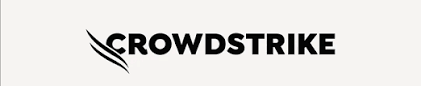

Três casos recentes mostram por que testar, validar e simular condições reais antes de uma implantação pode ser decisivo.
CrowdStrike • Optus • Pulumi Cloud
Integrantes: Kaio Prado • Arthur Vilha • Vitor Medeiros

Uma atualização de configuração do Falcon para Windows provocou travamentos de sistemas em escala mundial.
O sensor esperava 20 campos de entrada, mas a atualização forneceu 21.
Uma falha de rede derrubou serviços móveis, internet e telefonia fixa em toda a Austrália.
O regulador australiano registra que a interrupção durou aproximadamente 12 horas.
Uma migração de banco de dados testada fora de produção gerou bloqueios e indisponibilidade.
das requisições recebidas falharam durante uma interrupção de 24 minutos.
Ambientes de teste precisam representar volume de dados, tráfego e comportamento próximos aos de produção.
Atualizações podem ser liberadas primeiro para uma pequena parcela dos sistemas, reduzindo o impacto de uma falha inesperada.
Testes de carga, recuperação, integração e situações extremas ajudam a descobrir problemas que o fluxo normal não revela.
O objetivo não é apenas perguntar “funciona?”, mas também “o que acontece quando algo dá errado?”
Os casos mostram que uma alteração aparentemente pequena pode gerar consequências em escala global. Testes mais representativos, validações automáticas, implantação gradual e planos de recuperação tornam sistemas mais seguros e confiáveis.
Testes devem considerar não apenas o funcionamento esperado, mas também limites, falhas e condições reais de produção.
Uma falha pode causar indisponibilidade, prejuízo financeiro e até comprometer serviços essenciais.
Obrigado!